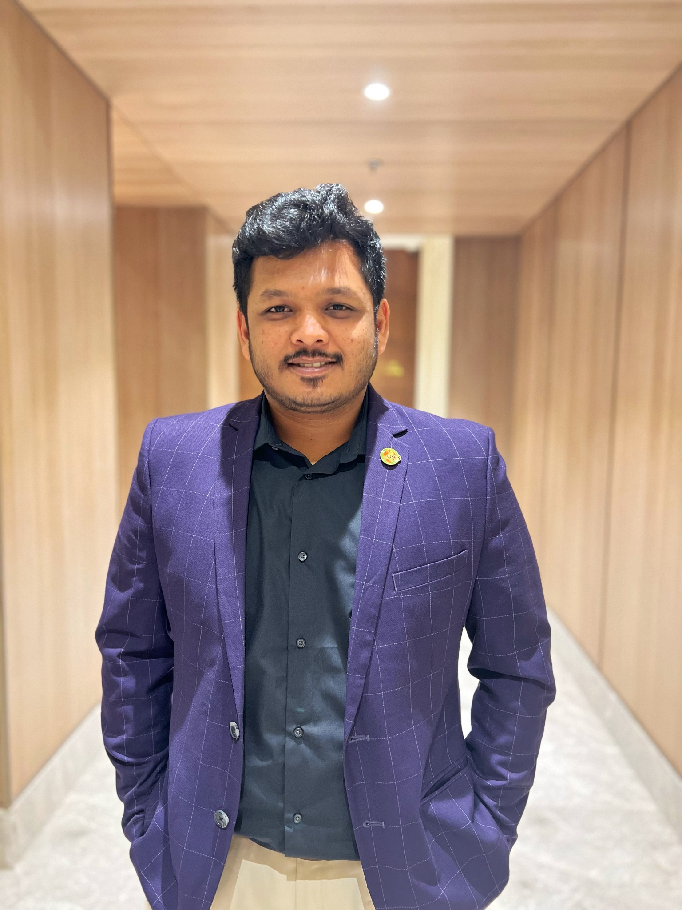

Environmental Engineering · Sustainability · Applied Research
Research. Industry. Innovation. Environmental impact.
I am Md Rashedul Islam, an environmental engineer and sustainability professional working across industrial environmental performance, research, compliance, data-driven monitoring, and education.

Research citation metrics are intentionally kept off the homepage until the next verified update.
Start here
A professional ecosystem, not just an online résumé.
Explore the part of my work most relevant to you—from research and publications to industry experience, sustainability insights, innovation, and consulting.
Environmental research & applied projects
Water, sustainable textiles, environmental data, GIS, LCA, and resource efficiency.
Explore research →International sustainability & compliance work
Auditing, quality assurance, traceability, management systems, and corrective action across manufacturing supply chains.
View experience →Scholarly research portfolio
Research spanning environmental engineering, water systems, AI, GIS, climate, and sustainable textiles.
View publications →Environmental technology & intellectual property
A dedicated home for validated innovation, prototypes, and patent-related work as official status becomes public.
Explore innovation →Research & sustainability insights
Professional writing that connects engineering evidence, factory experience, and sustainability practice.
Read insights →Independent sustainability consulting
Readiness, gap assessment, resource efficiency, traceability, training, and corrective-action support.
View services →Research themes
Connected environmental problems need connected solutions.
My work sits at the intersection of industrial sustainability, environmental engineering, and data-supported decision-making.
Sustainable & Circular Textiles
Environmental performance, recycled materials, traceability, circularity, and responsible production.
Water & Wastewater Systems
Industrial wastewater, reverse osmosis, water quality, treatment, reuse, and purification.
Environmental Data & AI
Monitoring, predictive frameworks, data analysis, and decision support for environmental systems.
GIS & Environmental Assessment
Spatial analysis, field data, contaminated-site assessment, and environmental monitoring.
LCA & Resource Efficiency
Life-cycle thinking across water, energy, materials, emissions, and environmental hotspots.
Research → practical environmental decisions
Bridging academic work with implementation experience from manufacturing and sustainability assurance.
Professional focus
Environmental Engineering → Sustainability → Industry → Research → Innovation → Real-World Impact
This is the narrative that connects my academic training, international audit experience, research, teaching, and future technology development.
Read my professional story →